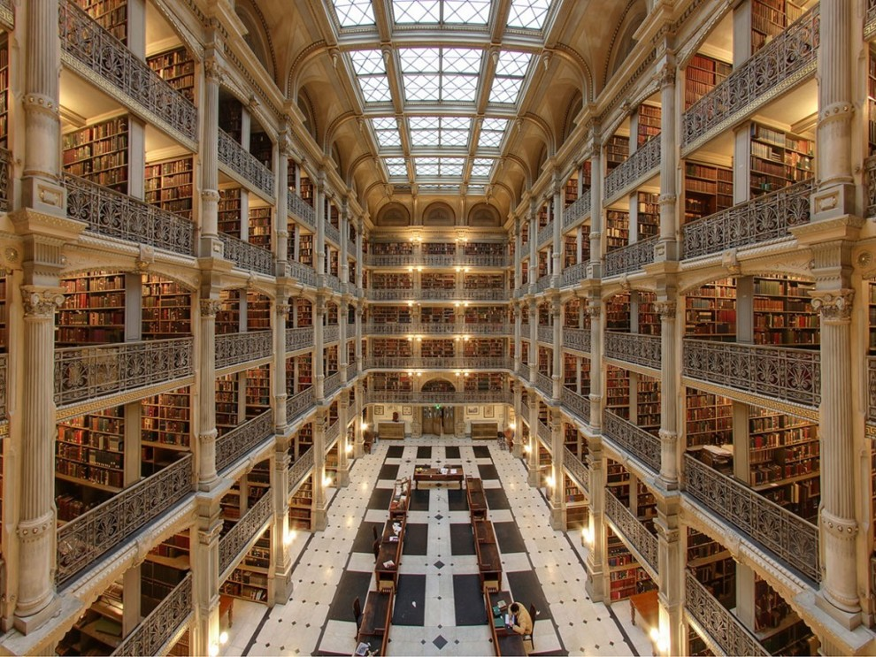
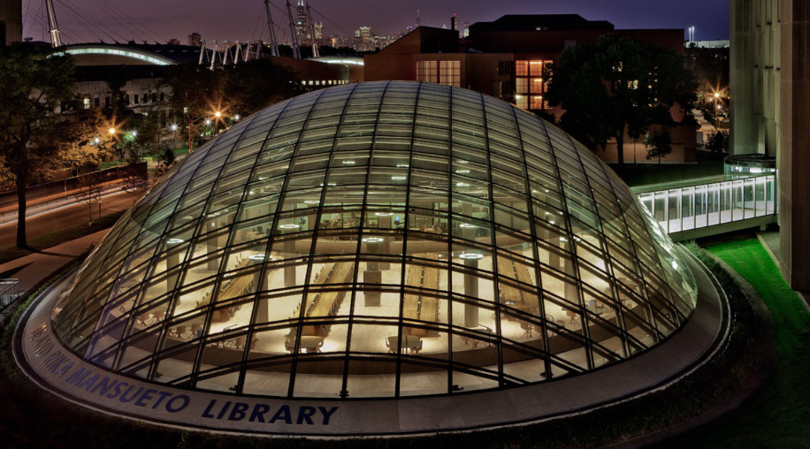
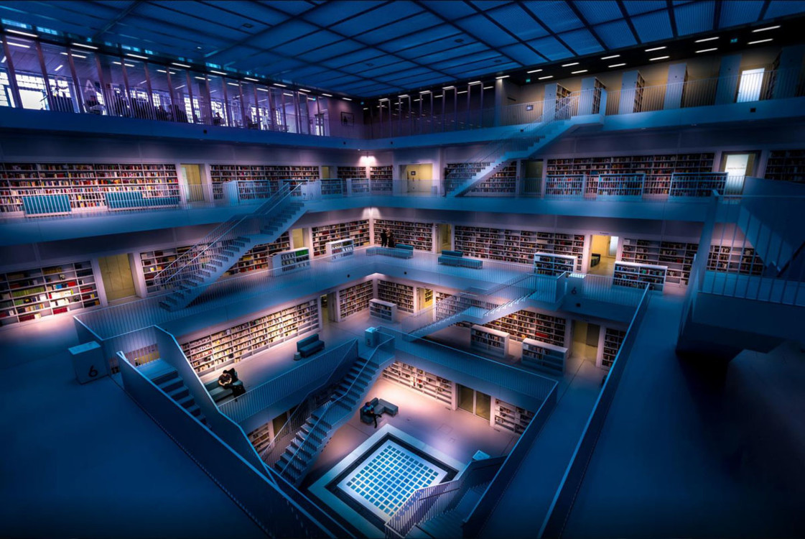
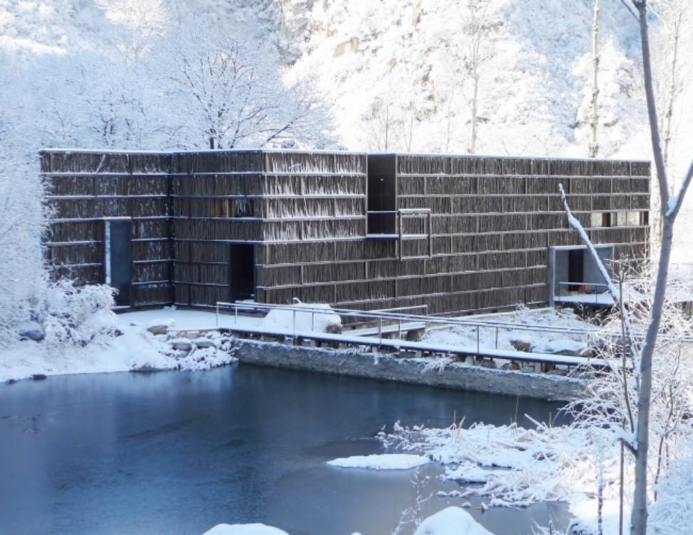

Самые современные библиотеки мира
Библиотека - древнее изобретение: одна из самых старинных библиотек мира, Александрийская, существовала еще в 3 веке до нашей эры. Сегодня, спустя столетия, билиотеки продолжают развиваться, удивляя не только содержанием, но и формой.
Библиотека Чикагского университета
В 2011 году под патронатом Чикагского университета открылась библиотека будущего. Купол, который вы видите на фото - просторный читальный зал на 200 мест; сама же библиотека, то есть книгохранилище, находится под землей на глубине 15 метров. Но самое интересное в этой библиотеке - не ее дизайн, а принципы работы. Здесь все максимально диджитализировано: вы заказываете книги через компьютер, заказ передается через робота в подземное хранилище, и оттуда наверх его доставляется специальный кран. Если вам не обязательно нужна книга, то текст из ее оцифрованного варианта могут вывести на монитор компьютера в читальном зале. Стоимость создания этого библиотечного проекта будущего - 81 миллион долларов.
Городская библиотека Штутгарта, Германия
Городская библиотека Штутгарта - одна из самых фотографируемых в мире. Снаружи она похожа на симпатичный белоснежный Кубик Рубика. У нее 11 этажей, у каждого своя тематика - музыка, искусство, детская литература и так далее. На этаже с музыкой - не только книги: есть ноты, диски и даже пианино, найдя какие-то особо редкие ноты, можно тут же сыграть пьесу. Есть этаж, который называется "Мир": в нем - книги на ста языках мира. Стандартного читального зала нет, вместо него по всей территории разбросаны диваны, мягкие кресла и уютные ниши в стенах. Для страстных любителей искусства здесь есть отдел "Графотека" - в нем на прокат можно взять (и повесить у себя дома) оригиналы работ самых известных художников мира. Работы выдаются на 2 месяца.
Библиотека Лиюань, Пекин, Китай
Неподалеку от Пекина, в маленькой китайской деревушке находится библиотека Лиюань, которую вполне можно отнести к чудесам света. Библиотека находится в селе, окруженном горами, и чтобы не нарушать природную эстетику, китайский архитектор построил здание из 45 тысяч деревянных прутьев (и стекла). В библиотеке всем заправляет принцип естественности: здесь нет искусственного освещения. поэтому она работает только до 16 часов; внутри нет столов и стульев - книги расположены на террасах, а читать их можно, сидя или лежа на специальных циновках. Библиотека работает по принципу обмена: вы приносите сюда книгу, а взамен можно забрать любую из библиотеки.
